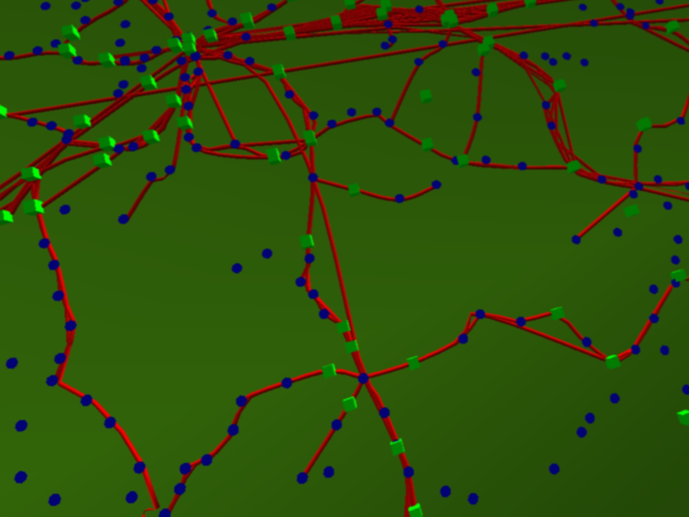

Goals
- Online learning
- Technical writing
- Speaking at conferences
- Meaningful side project
Project : piste.io

Overview
- From trains to mountains
- Building your own tools
- Blogging to learn and solve problems
- Drawing inspiration (shadertoy)
Starting with trains
- Mine data from API
- Create 3D scene to explore
- No underlying geographic data

Geo-data
- Both raster...
- Satellite imagery
- Elevation data
- ...and vector
- Town boundaries
- Rivers, roads, etc

Lots of nice global data sets: http://www.naturalearthdata.com/
Loading in data
var hMap = [[14.298, 51.050, 475.0], [14.293, 51.041, 391.0]....];
for ( vertex in vertices ) {
var h = hMap[row][col];
vertex.z += h;
Abstracting
- Idea to create library
- Drawing region in 3D, quite a lot of effort
- Abstract from user
var usa = new Terra( 'usa' )

JavaScript is pretty slow
- JavaScript just too slow for processing huge data
- GPU will render anyway, so why not process there too?
- No longer thinking in JSON, but textures

Modifying geometry on the GPU
vec3 p = position;
vec2 textureCoord = positionToTexture( position );
p.z = texture2D( uElevation, textureCoord );
gl_Position = projectionMatrix * viewMatrix *
vec4( p, 1.0 );
Push as much onto GPU
- General approach: push as much as possible onto GPU
- CPU speeds pretty much stalled, GPUs improving all the time
- Bet on a future where the GPU is your most powerful processor
Require.js module
define( ["geometry","material","renderer","scene"],
function ( geom, mat, renderer, scene ) {
var app = {
init: function () {
app.mesh = new THREE.Mesh(geom.box, mat.ice);
app.mesh.position.x = 20;
scene.add( app.mesh );
...
Tools
- Frontend
- THREE.js, JavaScript, Require.js, WebGL
- Data processing
- Backend
- Go (web server), PostGIS, Postgres
There's no debugger on the GPU!
- State of WebGL tooling poor, relative to JavaScript
- Development really painful, typo takes 10 seconds to surface
- Solution: command line tool for validating GLSL
https://github.com/felixpalmer/glsl-validator
OSS & blogging
- Great way to focus on a specific problem
- Feedback useful to improve code/design
- Motivation, when working on a unreleased project
Innovating by elimination
- As an individual, lack resources to compete against incumbents
- Look at what is being done and avoid duplicating it
- Embrace restrictions
- Better to have something innovative, but possibly useless, than useful, but already done
No imagery? No problem
- Do not use HD satellite photography
- Instead, generate terrains based on knowledge of locations
Data sources
- Satellite imagery
- Elevation data
- Land cover data

Data courtesy of:
NASA / ESA (GLOBCOVER)
Giving up on the framework
- Great for learning, but just too broad
- Lack of good data to make things work
- Unclear if any use cases, except...
3D piste map
- Dramatic terrain, 3D really shines
- Alpine landscapes reasonably simple
- "Just" snow and rock
Experimentation
- Engine too complex to tweak in code
- No longer just a programming problem
- Expose parameters using DAT GUI
Transitioning to a product
- Adding pistes
- Simplify camera controls
- Build chrome around engine (React.js)
Tools
- Frontend
- THREE.js, JavaScript, Require.js, WebGL, DAT GUI, React.js
- Data processing
- Backend
JavaScript is pretty fast
- How to display labels?
- Need to raycast through terrain
- Efficiently handling DOM interactions using React.js
Scaling
- All work done on client, entire site is just static files
- Automate all data processing, do not want to do manual data entry!
- Scalabilty more or less comes for free, just need to host on scalable platform, e.g. S3
- Leverage cloud for computation
Launching
- Many, many bugs!
- Device/OS/browser specific quirks
- Terrible load time
- UX issues (3D is hard)
- Bit by bit, fix and improve
Takeaways
- Work on something you find interesting
- Never stop learning from others
- Break out difficult problems and blog about them
- Don't be afraid to do something new, even if value is unclear